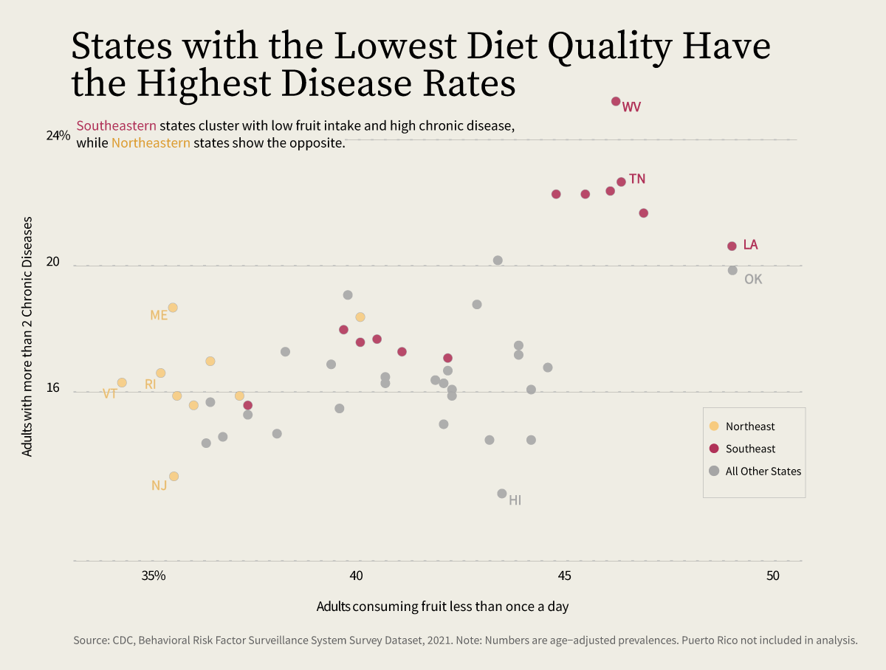
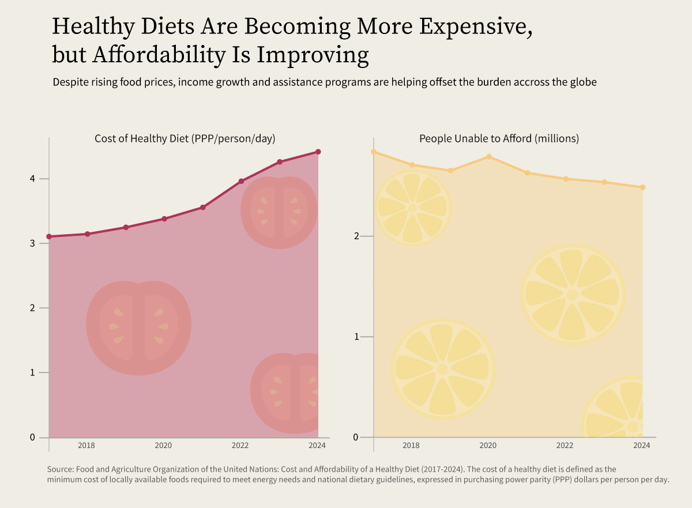
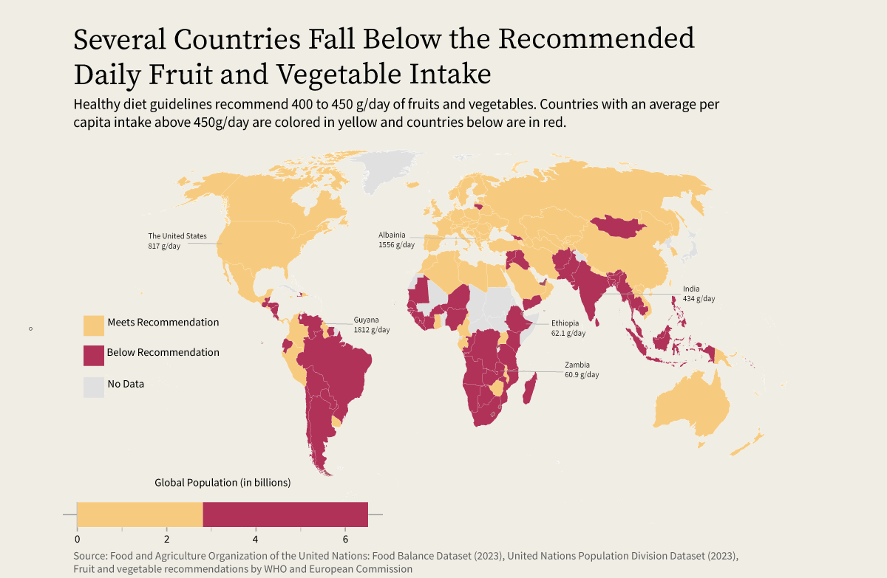

By Sneha Tallam
April 30, 2026
Scroll through social media and you'll quickly encounter bold claims about food as medicine: diets that promise to cure chronic illness, boost metabolism, or prevent disease entirely. Some trends are relatively harmless, others far less so—extreme diets promoted online have, in some cases , led to serious health consequences.
But beneath the noise, the core idea isn't new or unfounded. The concept that food can shape health dates back centuries, and modern research continues to reinforce it. Across nutritional science, there is growing evidence that diet plays a central role in preventing and managing chronic conditions such as obesity, type 2 diabetes, cardiovascular disease, and certain cancers. Diets rich in fruits, vegetables, lean proteins, healthy fats, and low in processed foods, sugar, and excess sodium, are consistently associated with better health outcomes.
Yet this raises a more difficult question: if food truly is medicine, who actually has access to it?
In the United States, the relationship between diet and chronic disease is measurable, with some healthcare professionals stating nutrition as the number one cause of early death and early disease in the country.

This connection has shaped real-world interventions. The modern "Food is Medicine" movement gained traction in the late 20th century during the HIV/AIDS epidemic, when activists began delivering medically tailored meals to individuals experiencing both illness and malnutrition. These programs demonstrated that food could function not just as sustenance, but as a form of care—improving health outcomes while also addressing social isolation.
Today, organizations such as Food & Friends continue this work by preparing and delivering medically tailored meals in collaboration with registered dietitians and trained chefs. More broadly, global institutions like the Rockefeller Foundation have helped elevate Food is Medicine into an international priority, convening leaders to align research, policy, and implementation strategies.
These efforts build on earlier global commitments to nutrition, including the Rome Declaration on Nutrition (2014), the Sustainable Development Goals (2015), and the UN Decade of Action on Nutrition (2016), all of which emphasize improving access to healthy, sustainable diets worldwide.
Globally, there has been measurable progress in improving the affordability of a healthy diet. The gap is narrowing, suggesting that policy efforts and international initiatives are beginning to have an impact.

However, "more affordable" does not mean affordable enough. For millions of people—particularly in low- and middle-income countries—even the minimum cost of a nutritionally adequate diet remains out of reach. Research suggests that individuals would need to spend at least $3.75 per day to meet dietary guidelines, with roughly $1.50 allocated to fruits and vegetables alone.
For many households, this is simply not feasible. Diets often rely on cheaper, calorie-dense staples like rice, wheat, and corn. While these foods provide energy, they lack essential nutrients. Diets low in fruits and vegetables are among the leading contributors to illness and premature death globally, with an estimated 39% of diet-related deaths attributable to inadequate intake.

These disparities are the most visible on a global scale, and this is not simply a matter of personal choice or awareness. It reflects structural barriers: limited access, high costs, and food systems that do not support diverse, nutrient-rich diets.
At the same time, the popular narrative around food as medicine, which is often shaped by influencers and wellness culture, tends to overlook these realities. Recommendations that emphasize optimization and prevention assume a level of access that many people simply do not have.
Even in the United States, access remains uneven. Over 23 million Americans live in food deserts, where obtaining fresh, affordable food is a persistent challenge. Globally, the barriers are even more pronounced.
The growing momentum behind the Food is Medicine movement signals an important shift in how we think about health. But the data tells a more complicated story.
Food has the potential to be a powerful tool for prevention and care, but only when it is accessible, affordable, and culturally relevant. Without addressing these structural barriers, the benefits of food as medicine will remain concentrated among those who already have the resources to act on it.
So the question is not simply whether food can be medicine. It is whether we are willing to build systems that make it medicine for everyone.
Chart 1 was created using datasets from the Centers for Disease Control and Prevention (CDC) Chronic Disease Indicators.
Chart 2 was created using the Cost and Affordability of a Healthy Diet dataset, and Chart 3 was created using Food Availability Data, both from the Food and Agriculture Organization of the United Nations (FAO).
The global population bar graph was constructed using data from a Kaggle dataset compiling population estimates from Worldmeter.
All charts were coded in R and subsequently refined using Adobe Illustrator.
This data narrative was created as a final project for DATA 1500 at Brown University. Special thanks to Professor Reuben Fischer-Baum for his guidance, support, and instruction throughout the semester.